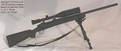
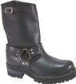

I tend to be a bit obsessive. Go ahead and chuckle if you know me. It's true. I know it. I'm okay with it. I think it goes well with my general unreasonableness and short attention span.
"I keep having these irrational bouts of obsessing on things." - Mom, 12/23/02. It's genetic.
There are a few obsessions that have... lasted long enough that I think they might as well be documented:
 |
The Car - 81/82 vette - probably my most extreme
obsession - I want a 1981/1982 Chevrolet Corvette, painted gloss black, with
metallic black rally stripes, a black leather interior, a manual transmission,
and a rebuilt engine. As of 12/02, this seems very unlikely to happen within
the next few years. Mon Jun 21 N-tropy said he wanted a mini. (2004) Fri Jun 25 After reading history of minis, I became curious about rallying. Sat Jun 26 Navigated in regisd's mini in a rally, I talked to people about autocross. Mon Jun 28 Decided I wanted a '95 M3, largely for autocross. Sat Jul 3 Test drove a Mini S, very fun. Fri Jul 9 Seriously doubting the likelyhood of finding an M3, reconsidering Mitsubishi Evolution. Sun Jul 11 Decided I wanted a bike - Suzuki SV650S. Evolutions are probably crap, M3 would probably still be nice. I got a similar bike (below). I still think an M3 would be nice. (still 2004) |
| My bike - Suzuki SV650, 2000, blue (naked sport bike). Purchased 9/14/04 with 8,170 miles. I first mentioned wanting a bike here on 8/19/01. | |
|  | Guns - I like them, I have a few, I need more. |
| Computers - I've been actively using them since around 1987. I've been actively using unix since December 1994. I recently built an Athlon 1.4ghz box named dancer. | |
| Piercing - I had to have this one pointed out to me. I have a 6 gauge barbell through my left conch, and am contemplating a number of other holes. Read about my first conch piercing. | |
I have insane hair. It's long, curly, thick, and coarse. I've been asked if
it's permed many times. Many people have told me they would kill for it. If it
weren't for these things, I would shave my head, because it's a major pain.
|
|
|  | Boots I like to wear black leather boots (when I'm not barefoot or wearing sandals). I wear 10 1/2 medium American, 44 European. I have owned (in chronological order):
And it looks like they stopped selling them between 11/21/03 and 12/1/03. Some people are more obsessed about boots than me. |
| Kayak - I've wanted one for more than half my life, and the apartment I
just moved into happens to be about 4 blocks from a lake. So I need one. I'm
currently considering an Old Town Castine, in green. I
hope to put one in the water soon, long before any sane person would do so for
the first time. And eskimo roll (once it gets warm). And then see if Monster
likes going with me. I'm hoping he'll enjoy sleeping on the bow in the fresh
air and sunshine on this calm lake. Was convinced to try renting a few times first. Two full summers later and I've only done it once. Very thankful for that suggestion. |
|
| Drums. In the woods, under the sky, a bonfire, surrounded by dancers, surrounded by drummers. Mmmm. | |
| bodybuilding | People have been telling me for years that my frame would respond well to a bit of resistance training. And I know that it feels much better to be in shape. I got a 1 year membership for 2004, went for roughly 6 months. |
| politics | I'd like to get more of my friends to get registered, and vote. And I think 3rd parties are most worthy of votes. |
| paganism | I've been fascinated by religion for much of my life, pantheist paganism seems to suit me |
| women | Yum. Obvious. But going better now than ever before. |
| photography | I wore a Canon S200 compact digital camera almost every day of the 9 months I owned it before I sold it to buy a newer model. I've only uploaded 339 pictures, must take more. |
| fish | fish - yet another one that had to be pointed out to me |
| snakes | |
| hunting |
{kind=link}
{kind=link}
{kind=link}
Comment on this page.
Return to Darxus' Home Page.
Tue Jan 5 10:11:52 EST 2010